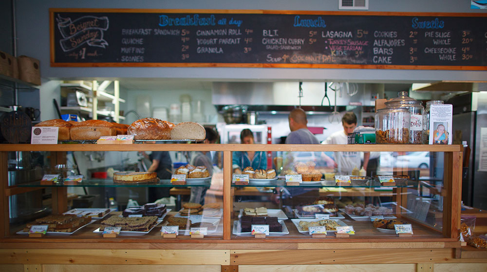

About Devil's Teeth
Devil's Teeth Baking Company was founded by Hilary Passman in the fall of 2007. Being a local resident of the outer sunset, Passman noticed the emptiness of not having a safe place where people could come and get fresh, healthy, and local food. From this, she created Devil’s Teeth. The name and logo come from the Farallon Islands, named for their sharp, teeth-looking edges. Much to her surprise, the shop was busy from the first day. Seven years is a long time for a small bakery to stay around, but with help from the community and a strong will to follow her dreams, Devil’s Teeth Bakery is looking to challenge the test of time.